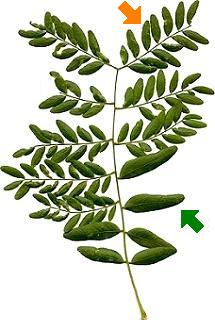

Das Blatt ist aus schmalen Blättchen zusammengesetzt. Die Blättchen sind am Ende rund und am Rand glatt oder gewellt.

Die Blätter sind oft doppelt gefiedert.
Die Fiederblättchen sind dann selbst in noch kleinere Blättchen unterteilt.
Das Blatt ist aus schmalen Blättchen zusammengesetzt. Die Blättchen sind am Ende rund und am Rand glatt oder gewellt. |  Die Blätter sind oft doppelt gefiedert. |